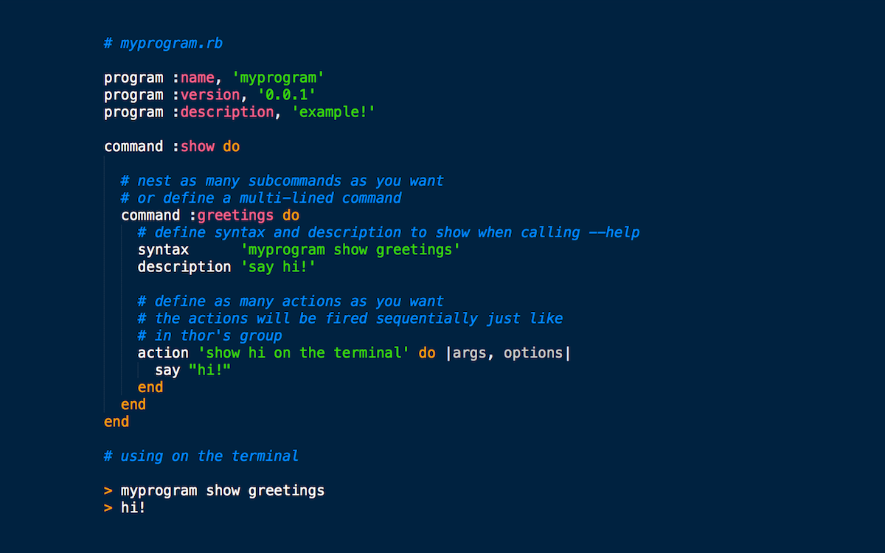
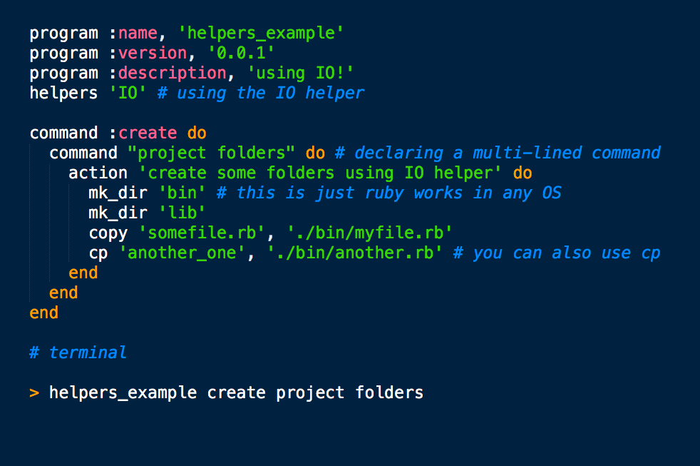
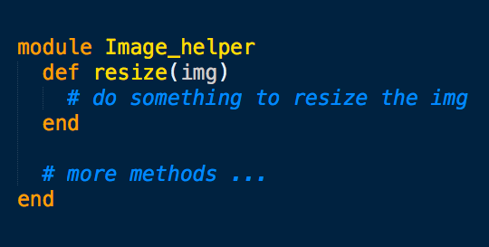

Command line framework based on commander and inspired by gli thor and others...
$ gem install simple_commander
helpers are mixins added to the program that wrap some functionality, there are default helpers like IO, or you can create your own helpers
to use a helper you just need to required with the helpers method
because IO and HTTP are part of the default helpers you just need to use the helpers method, now you can use it in your program
To use you own helpers you just need to create a ruby module
Now you just need to require './youhelper.rb' and use normally with "helpers 'IO', 'Image' ..." the name of the helper must follow the pattern name_helper
After installation go to a directory where you want your programs to live and
run `simple_commander init`, now every time you create a program with `simple_commander new
Lets say we wanna crate a new program called gh, to wrap some git and github tasks, we can run `simple_commander new gh` this will create a folder inside your programs path and put a exec inside you exec_path, now you can just run `gh --version` and `0.0.1` will return